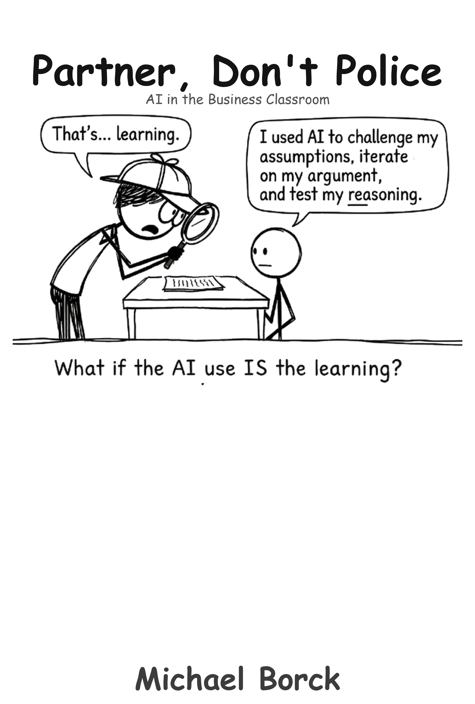

AI as a Teaching Partner: Practical Applications for Multidisciplinary Business Education
1 About This Book

This book serves both educators and students, with different pathways designed for each audience’s needs and goals.
1.1 Audience Overview
Primary Audience: Educators and Academic Staff
- Focus: Teaching enhancement, assessment design, curriculum integration
- Goal: Effective AI integration that maintains academic standards
- Pathway: Progressive skill development from foundations to advanced implementation
Secondary Audience: Students and Learners
- Focus: Direct AI literacy development and learning support
- Goal: Effective use of AI for academic success and career preparation
- Pathway: Skill acquisition and practical application
Both audiences share a common language and approach, creating aligned understanding between educators and learners. Whether you’re teaching business education or learning to use AI more effectively, this book provides relevant frameworks and examples.
1.2 Who This Is For
1.2.1 For Educators
- Business lecturers at Curtin University teaching undergraduate or postgraduate students
- Academics in business, marketing, management, tourism, accounting, economics, information systems, and supply chain
- Unit coordinators exploring AI integration aligned with learning outcomes
- Research supervisors supporting business students
- Anyone curious about practical, non-technical AI applications in business education
1.2.2 For Students
- Business students at all levels who want to develop AI literacy skills
- Learners seeking to understand how to use AI effectively for academic success
- Students preparing for professional careers where AI tools will be standard
- Anyone interested in developing meta-skills for learning and working with AI
1.2.3 Discipline-Specific Pathways
This book is designed for multiple business disciplines. While the core principles and techniques are universal, examples and prompts are tailored to your field:
Examples include market analysis, customer behaviour modelling, campaign strategy, brand positioning, and competitive intelligence simulations.
Examples include organisational design, change management, team dynamics, leadership scenarios, and process improvement workflows.
Examples include recruitment workflows, performance management scenarios, employee relations simulations, talent development, and organisational behaviour case studies.
Examples include destination marketing, customer experience design, revenue management, tourism planning, and hospitality crisis scenarios.
Examples include demand forecasting, inventory optimization, supplier negotiations, network design, and supply chain risk scenarios.
Examples include systems analysis, project management, IT governance, requirements gathering, and technology implementation planning.
Examples include financial analysis, audit workflows, budget management, taxation scenarios, and financial reporting simulations.
Examples include economic modelling, policy analysis, market equilibrium scenarios, microeconomic analysis, and behavioural economics simulations.
1.3 What You Won’t Find Here
- Technical AI theory or computer science concepts
- Coding or programming requirements
- Abstract discussions about AI’s future
- Complex software installation guides
- “One size fits all” solutions
1.4 What You Will Find Here
- Concrete examples: Every chapter includes ready-to-use prompts and scenarios tailored to multiple business disciplines
- Practical guidance: Step-by-step implementation for busy lecturers
- Real pedagogical value: AI applications directly support existing learning outcomes across business programs
- Honest assessment: What AI does well, what it doesn’t, and what requires human judgment
- Ethical frameworks: How to integrate AI responsibly and teach students to do the same in professional practice
- Disciplinary examples: All major examples appear in 8 different business disciplines
- Complex prompts and detailed examples use Quarto’s tabbed interface so readers can see their discipline’s perspective
- Customization guidance: How to adapt examples and approaches for different institutional contexts
1.5 Progressive Learning Structure
This book follows a carefully designed progression from foundational concepts to advanced excellence:
1.5.0.1 Foundation Pathway (Chapters 1-6)
For educators: Build pedagogical understanding and basic AI skills
For students: Develop AI literacy and foundational capabilities
1.5.0.2 Core Applications Pathway (Chapters 7-18)
For educators: Practical teaching implementations across disciplines
For students: Applied learning and professional skill development
1.5.0.3 Implementation Excellence Pathway (Chapters 19-22)
For educators: Advanced assessment, accessibility, and global adaptation
For students: Meta-skills development and inclusive learning practices
1.5.0.4 Resources Pathway (Appendices A-E)
For both audiences: Ready-to-use materials and references
1.6 Recommended Reading Pathways
1.6.1 For Educators - Teaching Excellence Path
Quick Start (if you have 1-2 hours):
- Chapter 1 (30 min) - Understand the problem we’re solving and core principles
- Chapter 2 (45 min) - Your first AI conversation and the CRAFT framework
- Your discipline’s examples - Browse chapters and pick examples most relevant to your field
Comprehensive Implementation (if you have a semester): Read in book order (each chapter builds on previous):
- Introduction - Pedagogical foundation
- Getting Started - CRAFT framework for structured prompting
- Discovering Your Strategy - Using AI to discover your personal AI strategy
- First Steps - Week-by-week implementation guidance
- Seven Essential Techniques - Core prompt engineering techniques
- Managing LLM Context - Working smarter with AI conversations
- Flight Simulator - Creating realistic practice scenarios
- Critique Toolkit - Teaching students to evaluate AI critically
- Ethics, Data Governance & Integrity - Transparent approaches to AI use
- Process Assessment - Assessing thinking, not just outputs
- Self-Assessment - Building student metacognition with AI
- Virtual Company - Sustained simulation learning
- Unit Design - Integrating AI across full units
- Static to Interactive - Converting existing content to AI-enhanced learning
- From Conversation to Document - Creating professional deliverables from AI conversations
- Research Assistant - AI for postgraduate research
- Advanced Frontiers - Agents, automation, RAG, emerging capabilities
- Assessment Design and Evaluation Rubrics - Concrete assessment frameworks
- Technical Troubleshooting and Risk Management - Handling technical challenges
- Accessibility and Inclusive AI Integration - Ensuring access for all students
- Global Perspectives and Adaptation - International context adaptation
- Conclusion - Bringing it all together
1.6.2 For Students - Learning Excellence Path
Direct AI Literacy Development:
- Chapter 2 - Basic prompting skills and CRAFT framework
- Chapter 5 - Seven essential techniques for effective AI interaction
- Chapter 6 - Managing conversations and context
- Chapter 8 - Critical evaluation of AI outputs
- Appendix E - Using AI to master AI (meta-skills)
Applied Learning and Practice:
- Chapter 7 - Flight simulator practice scenarios
- Chapter 11 - AI as research assistant
- Chapter 12 - Self-assessment and metacognition
- Chapter 15 - Creating professional work from AI conversations
Support and Resources:
- Appendix A - Prompt library for immediate use
- Quick Reference Guide - Common questions and solutions
1.6.3 For Both Audiences - Collaborative Path
Institutional Implementation:
- Program teams: Use curriculum planning pathway
- Faculty development: Use workshop and assessment chapters
- Quality assurance: Use troubleshooting and accessibility frameworks
Shared Learning Experience:
- Coordinated approach: Educators and students use shared frameworks
- Common language: Aligned understanding of AI integration goals
- Feedback loops: Both audiences benefit from shared perspectives
1.7 Who This Is For
- Business lecturers at Curtin University teaching undergraduate or postgraduate students
- Academics in business, marketing, management, tourism, accounting, economics, information systems, and supply chain
- Unit coordinators exploring AI integration aligned with learning outcomes
- Research supervisors supporting business students
- Anyone curious about practical, non-technical AI applications in business education
1.7.1 Discipline-Specific Pathways
This book is designed for multiple business disciplines. While the core principles and techniques are universal, examples and prompts are tailored to your field:
Examples include market analysis, customer behaviour modelling, campaign strategy, brand positioning, and competitive intelligence simulations.
Examples include organisational design, change management, team dynamics, leadership scenarios, and process improvement workflows.
Examples include recruitment workflows, performance management scenarios, employee relations simulations, talent development, and organisational behaviour case studies.
Examples include destination marketing, customer experience design, revenue management, tourism planning, and hospitality crisis scenarios.
Examples include demand forecasting, inventory optimization, supplier negotiations, network design, and supply chain risk scenarios.
Examples include systems analysis, project management, IT governance, requirements gathering, and technology implementation planning.
Examples include financial analysis, audit workflows, budget management, taxation scenarios, and financial reporting simulations.
Examples include economic modelling, policy analysis, market equilibrium scenarios, microeconomic analysis, and behavioural economics simulations.
1.8 What You Won’t Find Here
- Technical AI theory or computer science concepts
- Coding or programming requirements
- Abstract discussions about AI’s future
- Complex software installation guides
- “One size fits all” solutions
1.9 What You Will Find Here
- Concrete examples: Every chapter includes ready-to-use prompts and scenarios tailored to multiple business disciplines
- Practical guidance: Step-by-step implementation for busy lecturers
- Real pedagogical value: AI applications directly support existing learning outcomes across business programs
- Honest assessment: What AI does well, what it doesn’t, and what requires human judgment
- Ethical frameworks: How to integrate AI responsibly and teach students to do the same in professional practice
1.10 A Core Concept: Prompting as Foundation
Throughout this book, prompting is your core skill. Whether you’re:
- Writing direct instructions to AI tools
- Integrating AI into familiar software (Word, PowerPoint, Teams)
- Automating workflows with agents
- Building custom tools
…you’re fundamentally communicating with AI through prompts. Master prompting, and you can adapt to any AI tool,past, present, or future. Chapters 2-4 teach you prompting as a conceptual foundation; everything else applies that foundation to specific teaching challenges.
2 How to Use This Book
| Your Situation | Recommended Reading Path |
|---|---|
| Completely new to AI | Start with Chapter 1 (motivation) and Chapter 2 (your first AI conversation). Work through the basics before exploring advanced applications. |
| Want to implement AI in teaching | Read Chapter 3 (your first steps) for a practical implementation plan. Then move to Chapter 4 (six essential techniques) and pick one to try immediately. Refer to Appendix A for copy-paste prompts. |
| Designing assessments | Read Chapter 11 (process-based assessment models) and Chapter 19 (assessment design & rubrics). Use these frameworks to redesign existing assignments. |
| Teach postgraduate students | Focus on Chapter 17 (AI as research assistant) for guidance on appropriate AI use in research contexts. |
| Presenting to colleagues | Use Appendix B (one-hour faculty workshop guide) as a facilitation template. |
| Need institutional justification | Refer to Appendix C (alignment with Curtin learning outcomes) to demonstrate how AI integration supports existing educational goals. |
3 The Core Philosophy
Three principles underpin everything in this book:
1. AI as Scaffolding, Not Replacement
You are the expert educator. AI is a tool that helps you scale what you already know works,personalised practice, immediate feedback, realistic simulations. AI builds the framework quickly; you ensure it’s pedagogically sound and academically rigorous.
How this applies to your discipline:
AI generates competitive analysis frameworks and customer segmentation scenarios. You validate the business logic, ensure market assumptions are sound, and teach students to question data sources and market trends.
AI creates organisational scenarios and change management workflows. You ensure they reflect real organisational complexity, teach students about stakeholder dynamics, and guide reflection on ethical leadership implications.
AI generates candidate profiles and HR scenarios. You ensure they reflect realistic workplace situations, teach students about bias in hiring, and guide ethical decision-making about employee relations.
AI creates customer journey scenarios and service recovery simulations. You ensure they reflect authentic tourism contexts, teach cultural sensitivity, and guide experience design thinking.
AI generates demand forecasts and logistics scenarios. You validate the economic logic, teach supply chain trade-offs, and guide systems thinking about global complexity.
AI generates system requirements and IT scenarios. You ensure technical feasibility, teach about legacy system constraints, and guide project management realities.
AI generates financial scenarios and compliance workflows. You ensure accuracy, teach professional standards, and guide ethical judgment in ambiguous situations.
AI generates economic scenarios and policy simulations. You ensure theoretical soundness, teach empirical rigor, and guide students to understand limitations of models.
2. Transparency Over Prohibition
Rather than trying to prevent AI use (impossible and counterproductive), we teach students to use AI openly, critically, and ethically. This prepares them for professional practice where AI tools are standard across all business disciplines.
3. Start Small, Scale Gradually
You don’t need to revolutionize your entire curriculum overnight. Start with one prompt, one assignment, one semester. Build confidence and capability progressively.
4 Acknowledgments
This book synthesises ideas from multiple sources:
- Prompt engineering techniques adapted for professional education contexts
- Curtin University program information and learning outcomes
- Pedagogical frameworks from experiential learning, reflective practice, and authentic assessment
- Professional practice standards and ethical guidelines across business disciplines
- Emerging research on AI in higher education
The goal is not to be cutting-edge or technically impressive. The goal is to help business educators do their work better,prepare confident, competent, ethical professionals for complex workplaces.
5 Important Notes
5.1 Technology Changes Rapidly
AI tools evolve quickly. Specific platform names (ChatGPT, Claude, etc.) and capabilities described here reflect the state of technology in early 2025. The principles and pedagogical approaches remain relevant even as specific tools change.
5.2 Context Matters
This book was developed for Curtin University’s business programs. If you’re at a different institution or teaching a different discipline, you’ll need to adapt examples, learning outcomes, and institutional references. The frameworks are transferable; the specifics may not be.
5.3 This Is a Starting Point
Consider this book a foundation, not a complete solution. You’ll discover what works for your students, your teaching style, and your context through experimentation. The appendices provide templates you can adapt and build upon.
6 Getting Help and Providing Feedback
As you implement ideas from this book, you may have questions, encounter challenges, or discover innovative applications we didn’t consider.
For Curtin staff:
- Contact your Faculty Teaching and Learning team for pedagogical support
- Consult with IT Services for technical access and troubleshooting
- Connect with colleagues who are experimenting with AI integration
- Consider forming a learning community around AI-enhanced teaching
For others:
- Adapt frameworks to your institutional context
- Share successes and failures with your teaching and learning community
- Contribute to the growing body of practice around AI in education
7 A Personal Note to Readers
If you’re feeling skeptical about AI in education, that’s healthy. Technology is not inherently good or bad,it’s how we use it that matters.
If you’re worried this is too technical, I promise it’s not. If you can write an email, you can write an AI prompt.
If you’re concerned about losing control of your teaching, you won’t. You’ll gain new capabilities while maintaining your pedagogical judgment and professional expertise.
The goal of this book is simple: by the end, you should feel excited and equipped to try one new thing in your next class.
That’s it. One simulation. One new assessment approach. One conversation where a student gets to practice being a business professional in a safe environment before they face real workplace challenges.
Because ultimately, that’s what we’re here for.
Let’s begin.